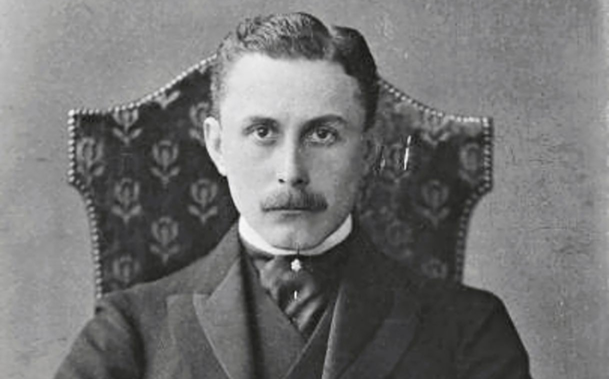

ARCHIII Loos was an Austrian and Czechoslovakian architect who grew up in Germany. He studied at the Dresden University of Technology, but soon became a dropout. He was the leading critic of the use of decoration and style in architecture. He argued that it needed to be functional, which is still in his writing “Ornamentation and Crime.” Loos viewed the use of design and ornament as childish and backward. He frequently railed against the idea that buildings should be made visually pleasing in any way, which did not add to the function of the structure.
